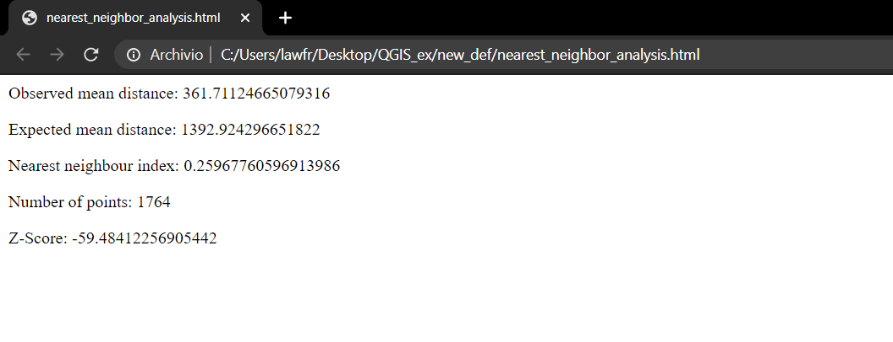

3.4. Proximity analysis¶
We will now focus on operations involving point layers. Please note that QGIS, when clipping a Point layer, also converts its geometry type to MultiPoint. This geometry type is not suitable for some of the functions we will use in the next step and therefore we see first how to convert the geometry type back to Point.

Fig. 3.4.1 In the information of the places layer we can see that its geometry is MultiPoint
3.4.1. Convert geometry type¶
Available at Processing Toolbox->Vector geometry->Convert geometry type, it provides an algorithm that allows to convert the MultiPoint features to single Point features. To do so, the input parameters are:
- Input layer: the point layer whose geometry we want to convert. In this example we use the
placeslayer- New geometry type: select Centroids
- Converted: the path and the name of the output vector layer. Note that if left empty a temporary layer will be created

Fig. 3.4.1.1 Convert geometry function window

Fig. 3.4.1.2 Now the
placeslayer’s geometry is MultiPointIn order to continue with the following functions, please convert the geometry type also for the
naturalpoint layer.Note
After you are done with the conversion, you can remove the previous point layers and include in the project only the new ones.
3.4.2. Average Nearest Neighbor¶
Available at Processing Toolbox->Vector Analysis->Nearest Neighbour Analysis, it provides a function that performs nearest neighbor analysis for a point layer. The output is generated as an HTML file with the computed statistics. We perform the Nearest Neighbor Analysis with the
naturalpoint layer; the input parameters are:
- Input layer: the
naturallayer- Nearest Neighbor: the path and the name of the output HTML file. Note that if left empty a temporary file will be created

Fig. 3.4.2.1 Nearest Neighbor Analysis function window
Once the operation is done, you can open the HTML file containing the results and you will see information about the Observed mean distance, Expected mean distance, Nearest neighbour index, Number of points, and Z-Score.
Fig. 3.4.2.2 The html result when opened in the browser
{kind=link}
We now see how to calculate the nearest feature to a given point or set of points in QGIS. We distinguish between distances from point to point, and from point to a line or polygon layer.
3.4.3. Distance from point to point¶
Available at Processing toolbox->Vector analysis->Distance to nearest hub (points), it provides an algorithm that computes the distance between point features taken as the origin and their closest point destination. In this case, we will calculate the distance from the
placeslayer to thenaturallayer. The input parameters are:
- Source points layer: the
placesshapefile- Destination hubs layer: the
naturalshapefile- Hub layer name attribute: osm_id
- Measurement units: meters
- Hub distance: the path and the name of the output vector layer. Note that if left empty a temporary layer will be created

Fig. 3.4.3.1 Distance from point to point function window
The result is a copy of the places layer, but each point feature has two additional attributes: the id of the nearest natural point feature, and the distance from it, as you can see from its attribute table:

3.4.4. Distance from point to layer¶
Available at Processing Toolbox->Vector analysis->Distance to nearest hub (line to hub), it provides an algorithm that computes the distance between point features taken as origin and their closest destination line or polygon feature.
Note
Distance calculations are based on the centroid of the line or polygon features.
In this case, we calculate the closest forest to each place. To do so, we select all the forests from the
landuse_alayer:
- Right-click on the
landuse_alayer in the Layers panel and click on Open attribute table- Click on the Select features using an expression button
- In the window, write the following expression:
"fclass" is 'forest', and then click “Select features”
Once we have selected all the forests from the landuse layer, we can run the Distance to nearest hub (line to hub) function. The input parameters are:
- Source points layer: the
placeslayer- Destination hubs layer: the
landuse_alayer, considering only selected features- Hub layer name attribute: osm_id
- Measurement units: meters
- Hub distance: the path and the name of the output vector layer. Note that if left empty a temporary layer will be created

Fig. 3.4.4.1 Distance from point to layer function window
The result is a line layer representing all the distances from each places point feature to the nearest forest feature.